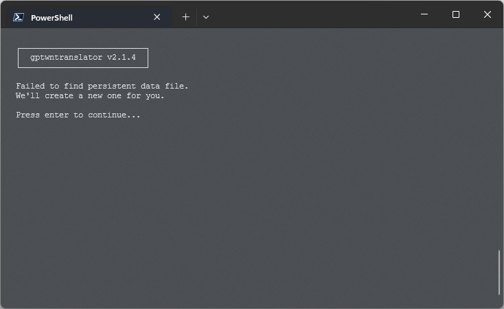
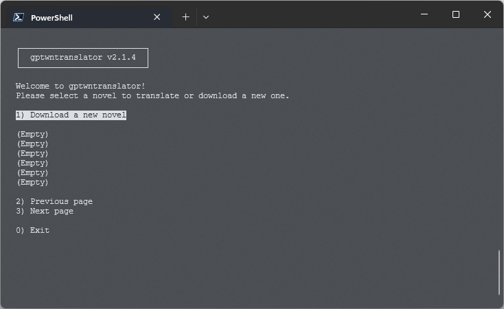
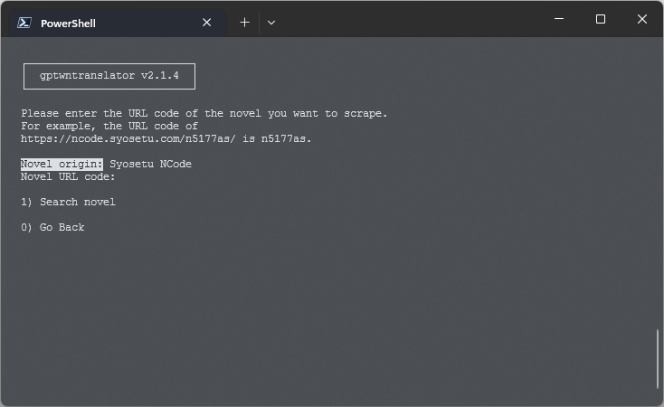
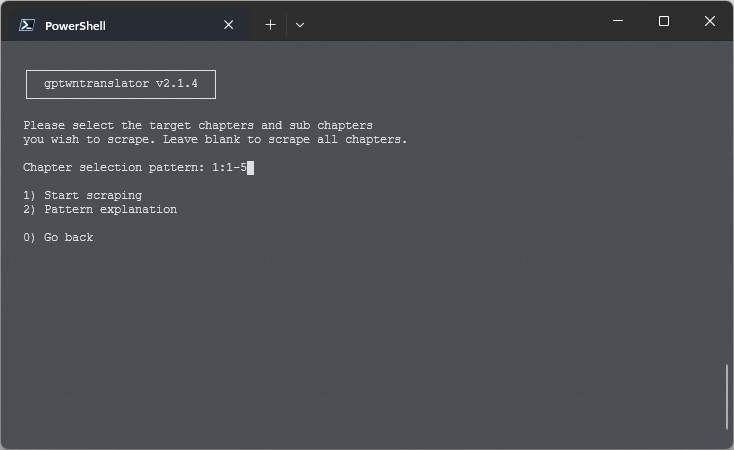
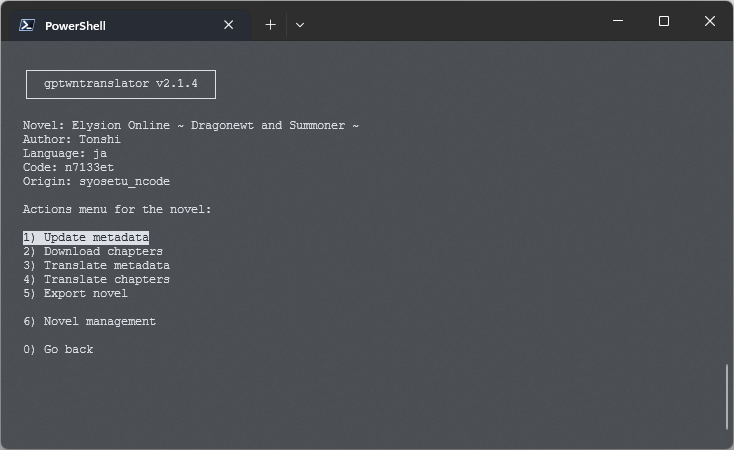
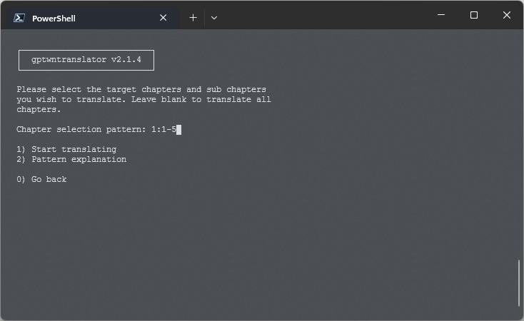
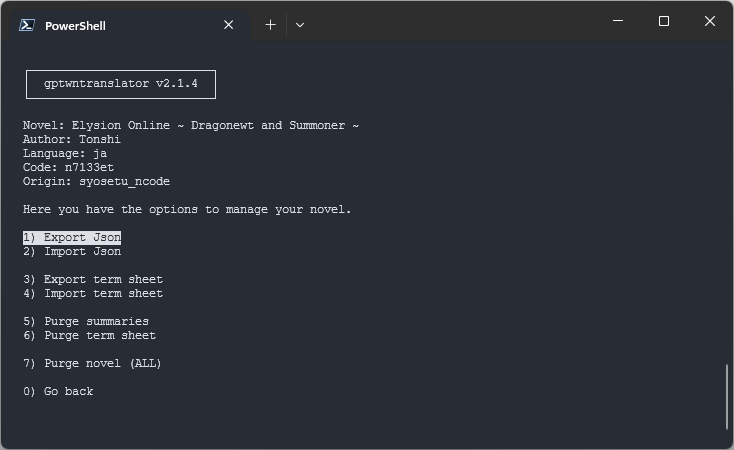

How to use
Relevant/Irrelevant arguments
Usage of this tool depends on 3 files and 1 folder. This 4 items are setup through the specific arguments. But they offer sane defaults. So, if you don't want to specify them, you don't have to. The 4 items are:
-
Config File- This file contains the settings for the tool. -
Local Storage File- The json file where the tool stores all data. -
Log File- The log file for the tool. -
Output Folder- The folder where the tool will export translations.
The config file is the only file that is required to exist before running
the tool.
By default the tool looks for a file named config.yaml in a config
subfolder
in the current working directory. If you want to use a different file, you can specify
it using the --config-file or -cf argument.
The local storage file is the file where the tool stores all data. By
default
the tool looks for a file named persistent_data.json in the current working
directory. If you want to use a different file, you can specify it using the
--persistent-file or -pf argument. There's no need to create
this
file before running the tool. The tool will create it if it doesn't exist.
The log file is the file where the tool stores all logs. By default the
tool
looks for a file named gptwntranslator.log in the current working
directory.
There's no option to specify a different log file.
The output folder is the folder where the tool will export translations. By
default the tool looks for a folder named output in the current working
directory. If you want to use a different folder, you can specify it using the
--output-directory or -od argument.
Modes
gptwntranslator provides 2 ways of operation. While both ways are through the command line, one is an interactive mode and the other is a non-interactive mode. The interactive mode guides the user through the process of scraping and translating a web novel. The non-interactive mode is for those who are familiar with the tool and want to use it for batch processing.
Interactive mode
The interactive mode is the easiest way to use gptwntranslator. Running the following command will start the interactive mode:
C:\>
gptwntranslator i
$
gptwntranslator i
C:\>
gptwntranslator i
First Initialization
On the first time we start the interactive mode, report that it can't find the local storage file. This is normal, as the file doesn't exist yet. The tool will inform us that it has created the file for us and ask us to continue.
Novel List
Once the local storage file is created, and on subsequent runs, the tool will take us to the novel list. The novels list is a list of all the web novels that have been scraped, allowing us to select one to work on. It also allows us to create a new web novel entry by scraping it from the web.
Initially, there'll be no local novels so we'll have to scrape one from the web. To do this, we select the option "Download a web novel" from the menu. The tool will ask us for the URL code of the web novel we want to scrape, and the source from which we want to scrape it.
We can select the source from a pre set list of sources, and the URL code will depend on the source we select. Taking the source "syosetu", the URL code is the part of the URL that comes after the domain name. For example, the URL code of https://ncode.syosetu.com/n5177et/ is "n5177et".
Once we enter the URL code and select the source, the tool will try to download the web novel from the web. If the web novel is found, the tool will scrape the metadata of the novel from the source. The metadata includes the title, author, description, etc. The metadata also includes the list of chapters of the web novel with their titles, and the list of sub chapters of each chapter.
Once complete the tool will take us to the novel menu.
Novel Menu
Once the web novel is loaded, the user will be presented with the novel menu. The novel menu is the main menu of the interactive mode.

The novel menu presents the user with 6 main actions:
- Update metadata: This option will update the metadata of the web novel.
- Download chapters: This option will download a range of chapters of the web novel.
- Translate metadata: This option will translate the metadata of the web novel. The metadata includes the title, author, description, etc.
- Translate chapters: This option will translate a range of chapters of the web novel.
- Export chapters: This option will export selected chapters to a .epub file.
- Novel Management: This option will take us to a menu where we can export/import terms sheet, export/import json entry, and purge the novel from the local storage.
Actions
The Update metadata action will update the metadata of the web novel. The metadata includes the title, author, description, etc. The metadata also includes the list of chapters of the web novel with their titles, and the list of sub chapters of each chapter.
The Download chapters action will download a range of chapters of the web novel. The user will be prompted to enter the range of chapters to download. For a guide on how to enter the range of chapters, see the section on chapter targeting at the end of this page.
The Translate metadata action will translate the metadata of the web novel. The metadata includes the title, author, description, etc. This translation action only targets the general metadata of the web novel, and not the chapter titles.
Once the novel metadata is translated, the user will be able to see the translated metadata in the novel menu.
The Translate chapters action will translate a range of chapters of the web novel. The user will be prompted to enter the range of chapters to translate. For a guide on how to enter the range of chapters, see the section on chapter targeting at the end of this page.
The Export chapters action will export selected chapters to a .epub file. The user will be prompted to enter the range of chapters to export. For a guide on how to enter the range of chapters, see the section on chapter targeting at the end of this page.
The Novel Management action will take us to a menu where we can export/import terms sheet, export/import json entry, and purge the novel from the local storage.
The export options will export the terms sheet or the json entry of the web novel into the output directory. The import options will import the terms sheet or the json entry of the web novel from the input directory, expecting a file with the name source_code-urlcode-langcode-sheet.json, and source_code-urlcode-langcode.json respectively. For example, the import options will expect a file named syosetu_ncode-n5177et-en-sheet.json or syosetu_ncode-n5177et-en.json, when importing data for the web novel https://ncode.syosetu.com/n5177et/.
The purge option will purge the web novel from the local storage. This will delete data for the web novel from the local storage, but won't delete the output files.
Command mode
The command mode acts as a single command that performs a single action. The command mode is useful for automation and scripting.
Currently, this section is under construction.
Chapter Targeting
When the user is prompted to enter a range of chapters, the user can enter a string representing this range using the following syntax:
- Chapter numbers are represented by one or more digits (e.g., "3" or "12").
- Sub-chapter numbers are also represented by one or more digits (e.g., "4" or "23").
- Chapter ranges are represented by two chapter numbers separated by a hyphen (e.g., "2-5").
- Sub-chapter ranges are represented by two sub-chapter numbers separated by a hyphen (e.g., "6-9")
- A chapter can be followed by a colon and a list of sub-chapters or sub-chapter ranges (e.g., "3:2,5,7-9").
- Individual chapters or chapter ranges can be separated by semicolons (e.g., "3;5-7;8").
Here's an example input that would match this pattern.
This input would match the following chapters and sub-chapters:
- Chapter 1, sub-chapters 1,3,5,6,7
- Chapters 2,3,4, all sub-chapters
- Chapter 5, sub-chapters 1,2,3,6
- Chapters 6,7,8, all sub-chapters
Copyright © 2023 Rodrigo Jauregui | Licensed under GPL v3.0 | Privacy Policy